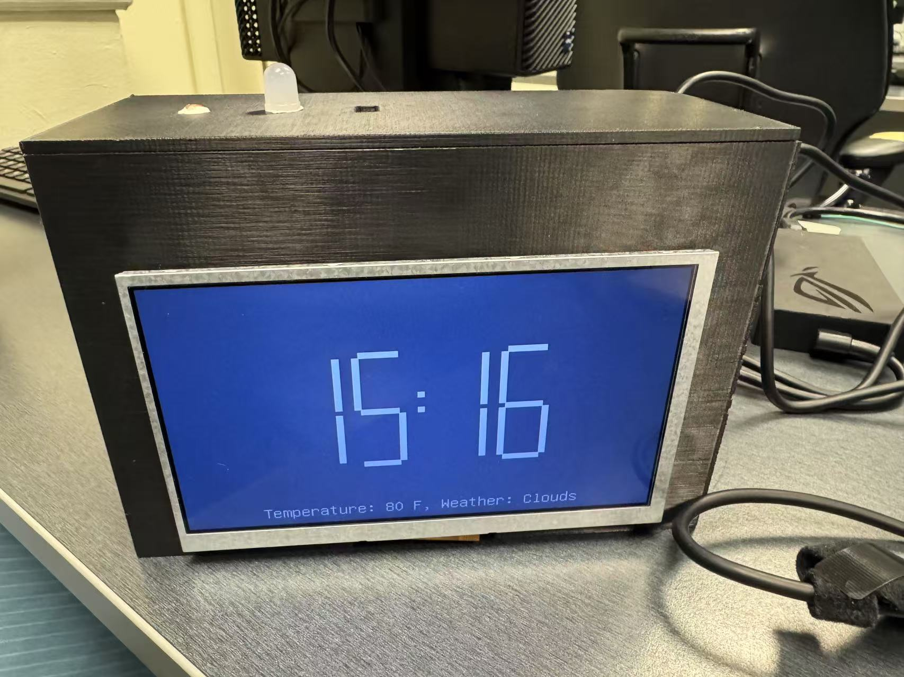
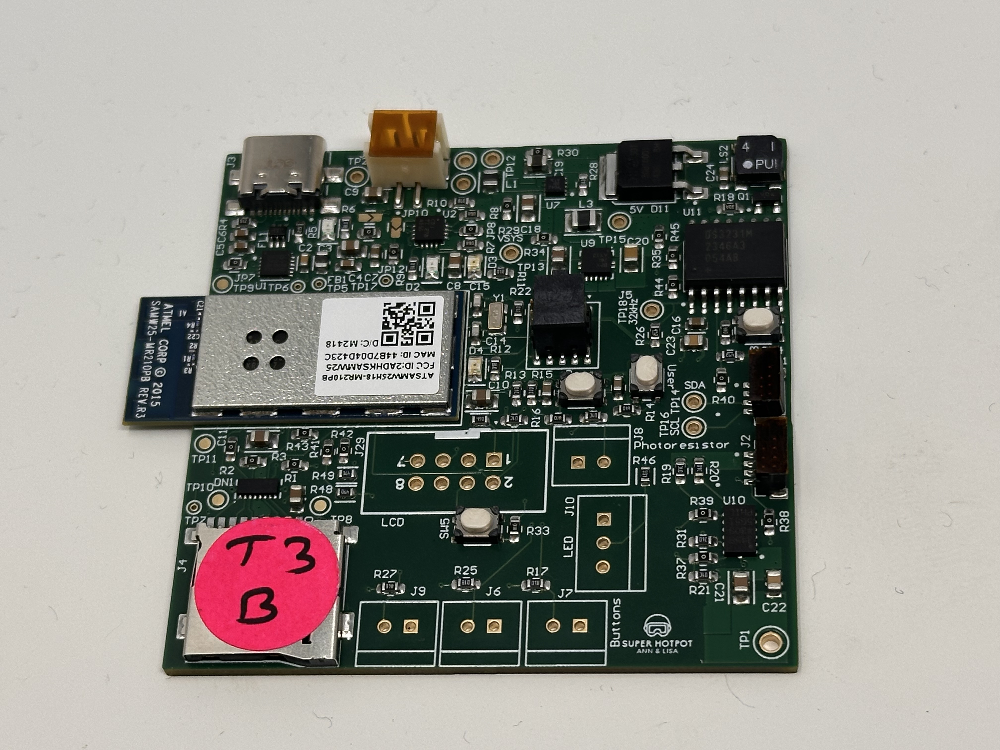
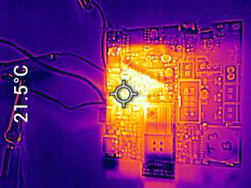
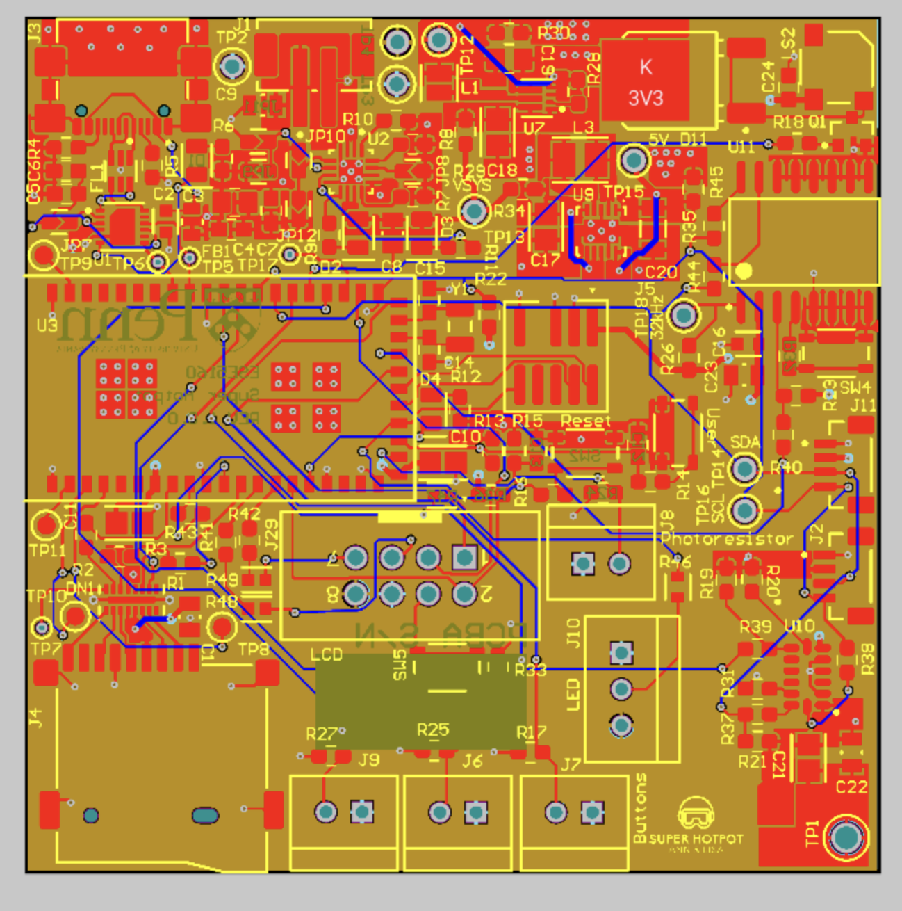
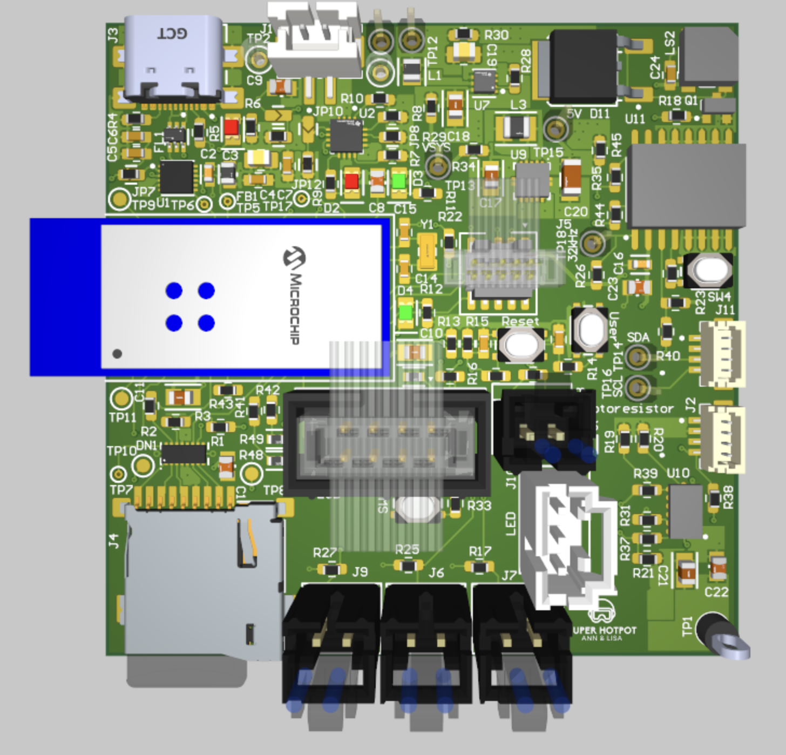
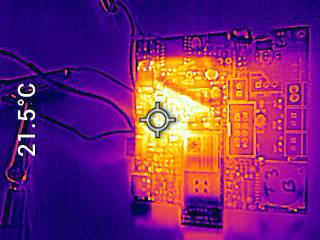
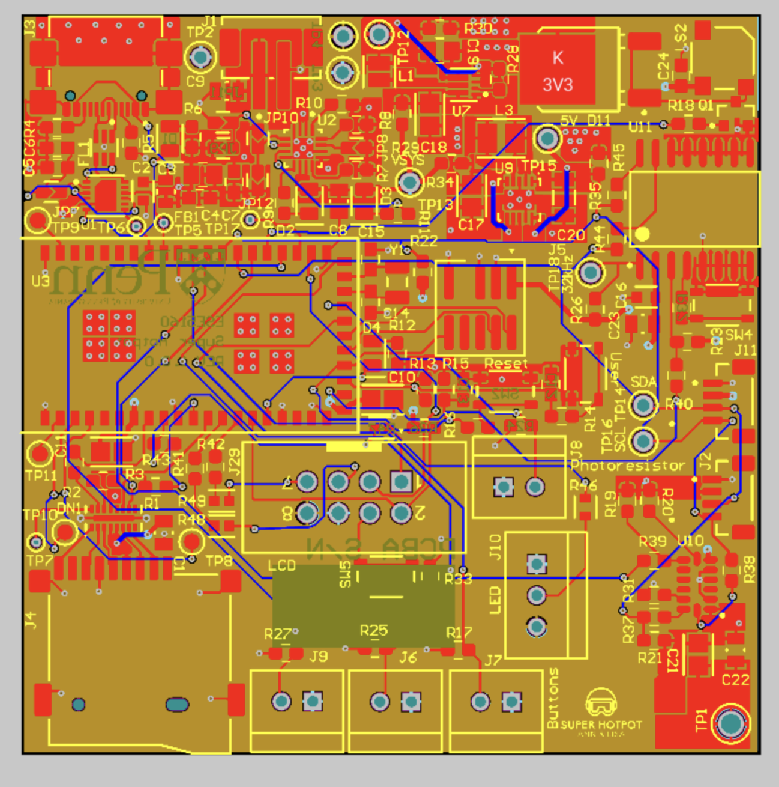
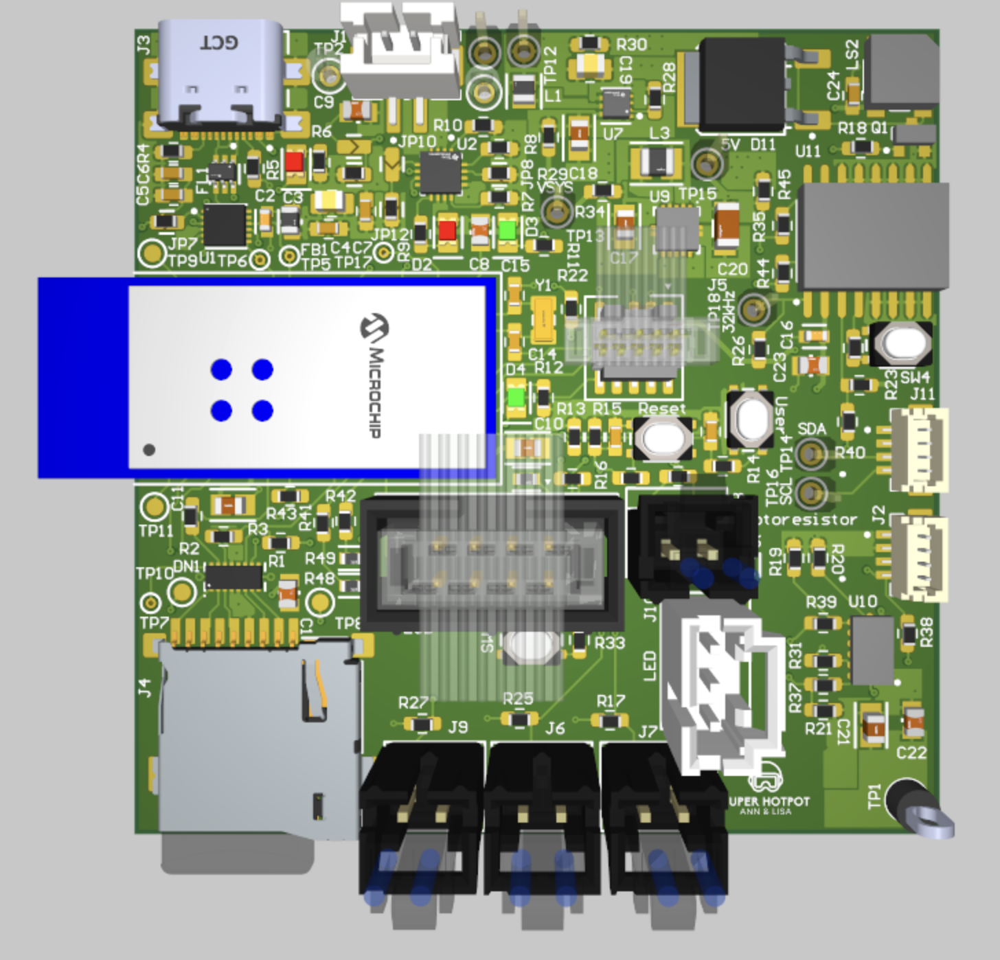

🎥 Video Presentation
📋 Project Summary
This project is an Internet-connected smart alarm clock that displays world time, weather updates, countdowns, and personalized to-do lists on an LCD screen. It features ambient light detection to turn on a light when it's dark.
We were inspired by the fact that as lazy people, we struggle to achieve self-discipline in our lives, and designed this alarm clock to help people turn off their alarms with some movement and leave their phones to study and work at regular intervals.The device connects to the Internet via Wi-Fi and communicates with a Node-RED dashboard to receive real-time weather data, synchronize time zones, and fetch task lists—enhancing its utility far beyond a conventional alarm clock.
🔧 Key Components

🖼 Project Images


 







🔗 Project Links